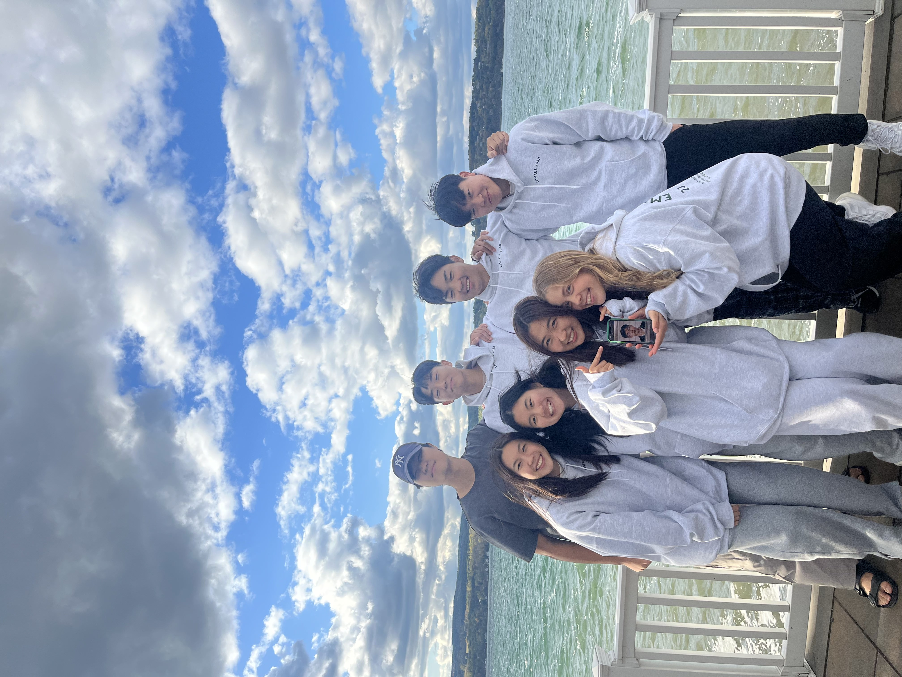
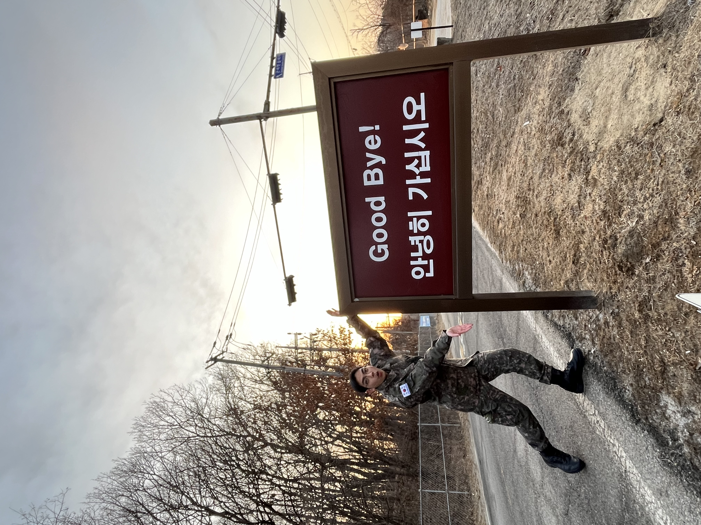

My Journey in the Korean Army

August 28th, 2023, I joined the Korean army. I put my friends, family, school, and life behind me to start a new life. It wasn't the life I initially wanted, but became an 18 months that would change me as a person.
Chapter 1 : Korea Army Training Center (aka bootcamp)
I remember the first day in the army like it was yesterday. In Gen Z terms, I felt "cooked." You know that feeling when you try to cram for an exam the night before and you don't know anything? Imagine you have 30 exams the next day and you have no idea what's going on for any of them. It was a hot day and I ended the first of the army, sleeping with 16 guys I had just met, tears running down the side of my face.


katc 25th rgt 1st bn 4th co 3rd plt 4th sqd grad ceremony
Six slow weeks in bootcamp and I was done! Six weeks of marching for 3~4 hours everyday in full gear, rolling in mud, all in the late summer heat...oh boy. Though grueling, bootcamp taught me to be resilient and God will always give me comfort in times of need, whether it be through surrounding me with amazing squad and platoon members, or friends from America that chatted with me during the 1 hour I got my phone on weekends.
bruh this guy ryan so short he's really tiptoeing 😂
Chapter 2 : New Beginnings in the Frontlines
translating gets me so nervous...my feet get ode sweaty
For those of you wondering where I spent the next 17 months of service, I was at no other than the United Nations Command Security Battalion - Joint Security Area. It's a very special place in terms of military and peace negotiations. It stands as the only place on the Korean peninsula where South Korean, American, and North Koreans stand duty face-to-face with another. It's where President Trump met up with Kim Jong Un a few years ago. By the grace of God, my Cornell background helped me to pull some strings and get a job as an interpreter. The picture above is yours truly translating for a US Army colonel.

Although the job wasn't physically strenuous, working in a tactical operation center (situation room) challenged me mentally because of the fast-pacedness of the work environment. I had to be quick on my feet and absorb knowledge like a sponge. Unfortunately, I was no fast learner. I got smoked a few times as a private and private first class (those are the first two ranks you get as a conscripted soldier). What's the army without a little bit of scolding, right? But at the end of the day, I realized that I got to experience so many cool things that I never would've been able to had I not ended up in the JSA Battalion, something I'll always be able to tell other 군필s (someone that completed their military service).

my ER dad giving me a visit ❤️, army dance show! 1 million views on tiktok
Chapter 3 : The Biggest Challenge
9 months into my service, I was halfway there, a corporal, and everything about the military life style felt so familiar. I think it was at this point that I didn't think a whole lot about what everyone's up to in school at Cornell. I had a lot of fun working out and goofing around in the army that it didn't bother me.


some photos of me hanging with army friends
But as all humans are, with comfort came a lot of complaints. My main complaint during my time of service was being irritated toward my coworkers so often. Many times my 후임s (soldiers lower-ranked than me) wouldn't do their given task the way I envisioned it and I got irritated. Sometimes in my barracks some kids would be talking too loud for my comfort and I'd get annoyed. At one point, it got to the point where I couldn't sleep out of anger and frustration. I felt so guilty because when I was a private, I made a promise to myself that I'd be a chill & laid-back 선임 (higher-ranked soldier) and be loving to my 후임s. This was no way I wanted to walk my life as a Christian, who was called to love, not be so angry that I can't live out my life properly.

dinner & coffee with my parents at munsan station ☕
That's why I'm so grateful that I had a chat with my company commander, Captain Baek. He is a father of two very young sons, and one of the officers that I respect the most. I told him honestly about the frustration I was dealing with, and he told me that it's my job as a 선임 to lead my team like a family, as if we're brothers. "People all act differently and have different traits and that's fine. It's up to you to leverage their strengths and weaknesses to make a team that works." Wise words from my captain. Uniformity is so emphasized in the army that I tried to fit all my squad members into a box that I saw fit. This was definitely a 꼰대 moment for me haha. Thanks to Captain Baek, I learned to let that go of that anger and embrace the unique characters of my team.
Chapter 4 : The Endgame (D-50)

This is where the army gets fun. You have a lof of PTO days left, nobody in the army cares what you do because you'll be gone soon, and you just get so excited planning what you'll do after discharing. I would always ditch work at the office to go do some pull-ups at the pull-up bar behind my building with my homie Seungsoo. Those of you who reach out to my @yongjinleee on IG, I can show you some back progress pictures. I wasn't entirely sure, though, what I would end up doing for the 6 months I had in between discharging and school. I definitely wanted to learn more programming, hence me making this jank website, so I considered going to some programming classes in Seoul, or maybe tutoring SAT/AP at a 학원 to make some extra dough before school begins. My mom suggested reaching out to some professors in Seoul to be a lab intern. It was definitely far-fetched given my minimal (pretty much nonexistent) skills in programming, AI, ML, ... pretty much anything CS. (Miraculously, I got an interview with a wireless networking lab at Yonsei, which is where I'm working now! I'll write more about what I do at my internship in the next blog.)


some kbbq and hike up naksan park w. the 여자친구. is your heart melting? cuz mine is.
All this boring crap aside, I also had some fun with my PTO vacations. My girlfriend, Jane, flew all the way from the United States to spend a week with me before my service ends. She's such a sweetheart, isn't she? We had a lot of good food including a Portuguese style octopus steak at a winery in Itaewon, did some fun activites like Namsan Tower (Jane says cool people call it the N Seoul Tower) and a Han River night cruise. We even had a dinner with my parents which I was very fun! I have to say, that week was like a movie without the ups and downs. Just all the good parts of a movie clipped together.
Chapter 5 : February 27th, 2025
The end. Final goodbyes. Can't believe it's over. A lot of regrets, but even more blessings. What will the next chapter of life bring?